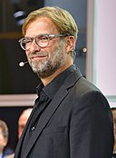
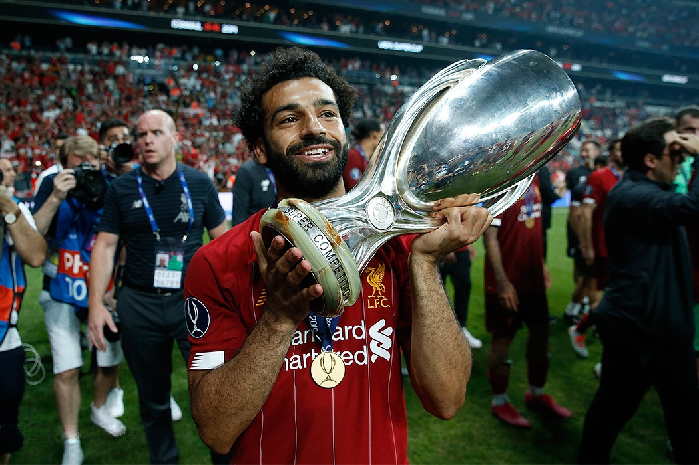

Our Manager Jurgen Klopp
Jürgen Norbert Klopp born 16 June 1967 is a German professional football manager and former player who is the manager of Premier League club Liverpool. He is widely regarded as one of the best managers in the world. On 8 October 2015, Klopp agreed a three-year deal to become Liverpool manager, replacing Brendan Rodgers. According to El País, Liverpool co-owner John W. Henry did not trust public opinion so he looked for a mathematical method very similar to Moneyball, the approach that Henry used for the Boston Red Sox in guiding them to three World Series wins, which he also owns via Fenway Sports Group. The mathematical model turned out to be that of Cambridge physicist Ian Graham, which was used to select the manager, Klopp, and players essential for Liverpool to win the Champions League. In his first press conference, Klopp described his new side saying "it is not a normal club, it is a special club. I had two very special clubs with Mainz and Dortmund. It is the perfect next step for me to be here and try and help" and stating his intention to deliver trophies within four years. During his first conference, Klopp dubbed himself 'The Normal One' in a parody of José Mourinho's famous 'The Special One' statement in 2004. On 8 July 2016, Klopp and his coaching staff signed six-year extensions to their deals keeping them at Liverpool until 2022. Liverpool qualified for the Champions League for the first time since 2014–15 on 21 May 2017, after winning 3–0 at home against Middlesbrough and finishing fourth in the 2016–17 Premier League season.
Our Captain Jordan Henderson

Jordan Brian Henderson MBE (born 17 June 1990) is an English professional footballer who plays as a midfielder for Premier League club Liverpool and the England national team. Henderson is noted for his leadership and technical ability. On 9 June 2011, Henderson was transferred to Liverpool for an undisclosed fee thought to be between £16 and £20 million. He made his debut in Liverpool's first match of the 2011–12 Premier League, a 1–1 draw against his former club Sunderland where he was given a mixed reception by Sunderland fans. On 27 August 2011, Henderson scored his first goal for Liverpool in a Premier League fixture at Anfield against Bolton Wanderers. On 26 February 2012, Henderson started on the right of midfield in Liverpool's 2012 League Cup Final victory over Cardiff City before being substituted in the 58th minute. On 5 May, he played the full 90 minutes as Liverpool were beaten 2–1 by Chelsea in the 2012 FA Cup Final. Henderson ended the 2011–12 season with 2 goals from 48 appearances. In August 2012, Henderson was told he could be signed by Fulham by new manager Brendan Rodgers, but this was rejected by the player. He went on to score his first European goal for Liverpool on 6 December 2012, with the winner against Udinese in the UEFA Europa League as the Reds qualified for the last 32. Henderson established himself as a regular member of the Liverpool team in the 2013–14 season, playing in 40 matches and scoring 5 goals. On 29 September 2013, he made his 100th appearance for the club as Liverpool won 1–3 at Sunderland. On 13 April 2014 he received his first career red card for a dangerous sliding tackle on Samir Nasri in a 3–2 win over Manchester City, resulting in a three match ban which meant he would miss three of Liverpool's last four matches without Henderson, Liverpool lost 0–2 in a home game against Chelsea and drew 3–3 with Crystal Palace, losing a 3–0 lead in just 15 minutes before the final whistle. Failure to win 3 points in each of those games meant Liverpool had already been overhauled by Manchester City in first place by the time of Henderson's return from suspension. On 11 May 2014, the final match day of the competition, he started in Liverpool's 2–1 home win over Newcastle United only to finish second as Manchester City claimed the league title in their concurrent game.
Star Player Mohamed Salah
Mohamed Salah Hamed Mahrous Ghaly born 15 June 1992, also known as Mo Salah, is an Egyptian professional footballer who plays as a forward for Premier League club Liverpool and captains the Egypt national team. Considered one of the best players in the world and amongst the greatest African players of all time, he is known for his finishing, dribbling, and speed. On 22 June 2017, Salah agreed a transfer to Liverpool. He signed a long-term contract with the Reds for an initial £36.5m fee that could rise to £43m. The fee was a club record, eclipsing the £35m spent on Andy Carroll in 2011. He was assigned the number 11 shirt previously worn by Roberto Firmino who instead switched to number 9. He joined the club on 1 July upon the opening of the summer transfer window, becoming Liverpool's first Egyptian player. He scored on his Premier League debut against Watford in a 3–3 draw on 12 August. On 24 August, Salah scored his second goal for Liverpool, in a 2017–18 UEFA Champions League play-off round 4–2 win (6–3 agg) against Hoffenheim, his first goal at Anfield. Three days later, Salah scored and assisted a goal in a 4–0 victory over Arsenal. For his performances in August, Salah was awarded Player of the Month by Liverpool supporters. On 17 October, Salah netted twice in a 7–0 Champions League win over Maribor, helping Liverpool to the joint-largest ever away win in the competition, and the largest away win by an English club.